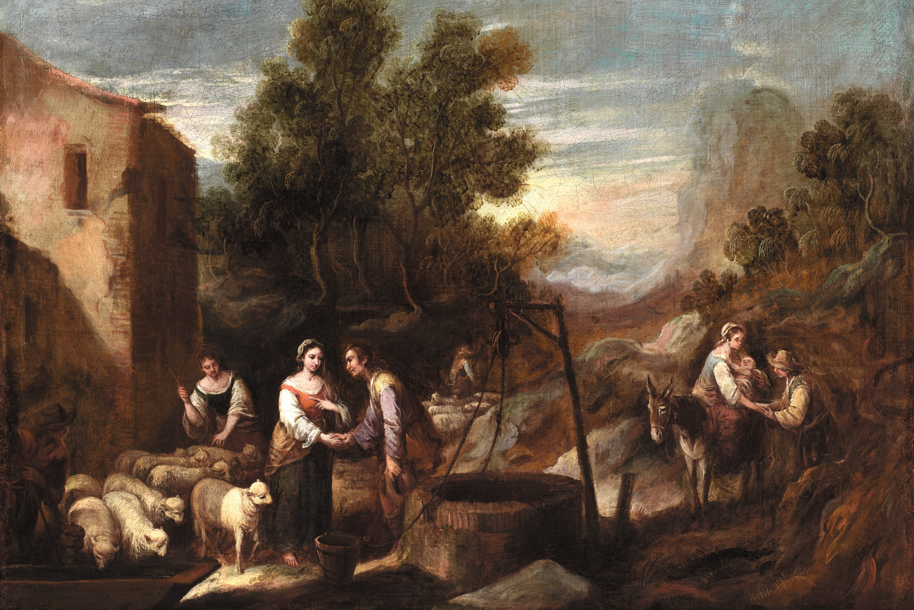

Learn more about BYU's Interfaith Student Association
Families are the building block of society and Jewish law and tradition highlights the centrality of the Jewish family. Judaism recognises that each parent has something different to give to their children to contribute to their religious, educational, emotional, social and material needs.
Jewish tradition highlights the importance of family ties and only by maintaining contact with both parents will the child be able to sustain relationships with both sets of grandparents and other relatives.
Source: Jewish Family Life and Customs - A Practical Guide by the Family Law Group of the Board of Deputies
A father is obligated to circumcise his son, to redeem him, to teach him Torah, to marry him off to a woman and to teach him an occupation. Some add also to teach him to swim. Rabbi Yehuda says that any father who doesn't teach his son an occupation teaches him to steal. - Talmud in Kiddushin
Historically, the rabbis perceived the mother as the dominant, emotional parental resource for their children. Fathers were seen as wonderful teachers and appropriate disciplinarians, but mothers were seen as the more loving parents. Though rabbinic bias was toward the mother, they cautioned children that even though they innately felt greater nurturing from their mother, they must honor their mothers and fathers equally.
Source: The Greenwich Time & Kiddushin (Talmud, 29a)
From the research I did, the role of parents and the value of family is emphasized throughout official texts and teachings that they constantly provide. One of the children's most importnat duties is to honor their father and mother, which implies that parents are heavily importnat in Judaism.
Learn more about BYU's Interfaith Student Association

Need a fun religion credit? Take REL C 393R!

Learn more about the BYU Catholic Newman Club!